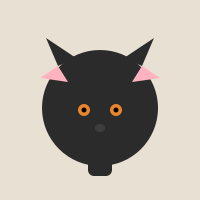
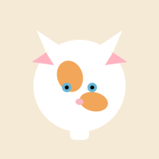
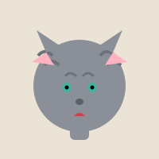
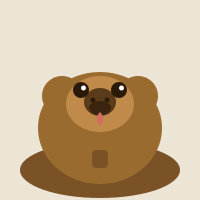
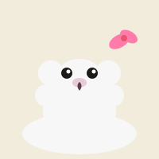

Michi
Gato negro de ojos verdes, macho, castrado, de 3 años. Se perdió en el barrio centro. Responde al nombre de Michi.
Ver más informaciónSeleccioná una categoría y conocé los datos de cada animal perdido. Cualquier información nos ayuda.

Gato negro de ojos verdes, macho, castrado, de 3 años. Se perdió en el barrio centro. Responde al nombre de Michi.
Ver más información
Gata blanca con manchas naranjas, hembra, de 1 año. Tímida, se asusta con los ruidos. Se la vio por última vez cerca de la plaza.
Ver más información
Gato gris atigrado, macho, de 5 años. Muy cariñoso y maullador. Usa collar rojo. Se escapó de casa el fin de semana pasado.
Ver más información
Perro mestizo de tamaño mediano, color marrón, macho, de 4 años. Muy juguetón. Lleva una chapita con su nombre.
Ver más informaciónBeagle de 2 años, tricolor, macho. Se perdió durante un paseo por la costanera. Responde a silbidos.
Ver más información
Perra caniche de pelo blanco, hembra, de 6 años. Usa moño rosado. Necesita medicación diaria. Extrañamos mucho su presencia.
Ver más informaciónSi viste alguna de estas mascotas, por favor comunicate con nosotros completando el siguiente formulario.
Este sitio es mantenido por un grupo de vecinos voluntarios de la ciudad, comprometidos con el bienestar animal.
Trabajamos junto a refugios y protectoras para reunir a las familias con sus mascotas. Actualizamos el listado a medida que recibimos información de los dueños.
Contacto general: contacto@mascotasperdidas.org